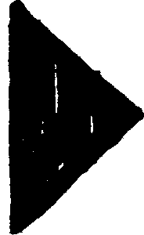

Unseen
What lies hidden in a large city reveals itself only to the careful eye. Between walls, streets and shadows, another world lives, concealed yet present. This journey of discovery leads to the wild animals of the city. Only when opening and unfolding the inner pages does one learn who the narratives are about. Inserted flaps with additional information draw the reader deeper in. Where do they live? What is their day like? How do they perceive our world?
Was sich in einer Grossstadt verbirgt, zeigt sich nur dem genauen Blick. Zwischen Mauern, Strassen und Schatten lebt eine andere Welt, verborgen, aber doch präsent. Diese Entdeckungsreise führt zu den wilden Tieren der Stadt. Erst beim Öffnen und Aufklappen der Innenseiten, erfährt man, um wen es sich bei den Erzählungen handelt. Eingeschobene Klappen mit zusätzlichen Informationen ziehen den Leser tiefer hinein, Wo leben sie? Wie ist ihr Tag? Wie nehmen sie unsere Welt wahr?
Picture series
Bildserie
The Bumblebee makes his way to the first flowerbed, checking which flower heads haven’t already been visited. He hovers and lands on the first one, extending his long tongue to sip nectar and store the pollen on his legs before moving to the next.
Die Hummel macht sich auf den Weg zum ersten Blumenbeet und prüft, welche Blütenköpfe noch nicht besucht wurden. Sie schwebt und landet auf dem ersten, streckt ihre lange Zunge aus, um Nektar zu trinken und den Pollen auf ihren Beinen zu sammeln, bevor sie zum nächsten weiterfliegt.
Sensory perception, Animals View
Sinneswahrnehmung, Sichtweise
The Common Carder Bumblebee is led by the scent of pollen and nectar, flying from bloom to bloom, creating a zigzag path.
Die Ackerhummel lässt sich vom Duft von Pollen und Nektar leiten, fliegt von Blüte zu Blüte und hinterlässt dabei eine Zickzackbahn.
The Common Carder Bumblebee sees through large compound eyes on either side of its head, giving a 300° view, and perceiving UV, blue, and green to find flowers.
Die Ackerhummel sieht durch grosse Facettenaugen auf beiden Seiten ihres Kopfes, die ihr ein Sichtfeld von 300° ermöglichen, und nimmt UV-, Blau- und Grünlicht wahr, um Blumen zu finden.
Project
Projekt
2025, 7 weeks,
Photography, Editorial, Bookbinding
2025, 7 Wochen, Fotografie, Editorial, Buchbinden
